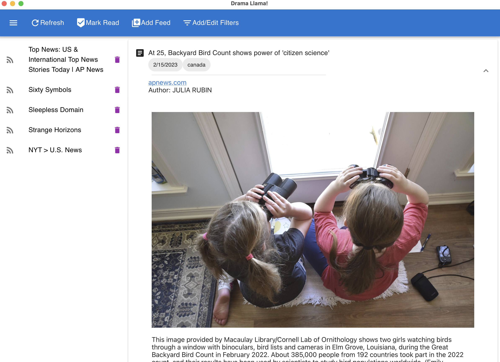

I’m a software engineering student at Ada Developers Academy and SDE intern at Amazon. I’m making a career switch from Instructional Design. I’ve tinkered with computers since high school, and I’m taking this opportunity to advance my skills beyond the hobby level.
If you want a peek into my brain, see my experimental digital garden.
Organizations

Technologies
Python
JavaScript
React
HTML5
Github
Selected Projects
Drama Llama: github, postmortem reflections
Technologies: Python (Flask) and JavaScript (React)
An experimental feed reader delivered as a desktop app and a platform for testing out natural language process filtering strategies.
This was my capstone project for Ada Developers Academy.

Task List: front end, api
Technologies: Python (Flask) and JavaScript (React)
Demonstration of full-stack task list app. The front end was developed with Erika Sha. (Ada project)
Chat Log: front end, demo
Technologies: JavaScript(React)
Creation of data-driven react controls. (Ada project)